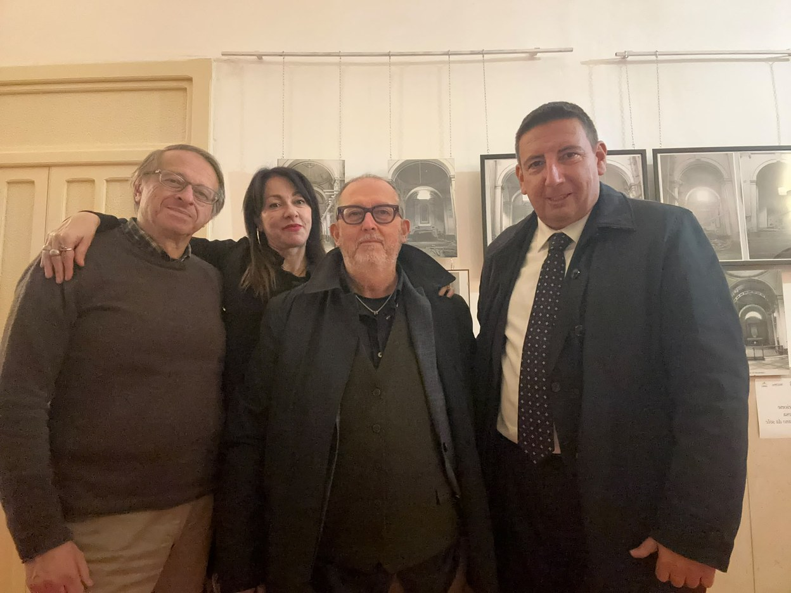
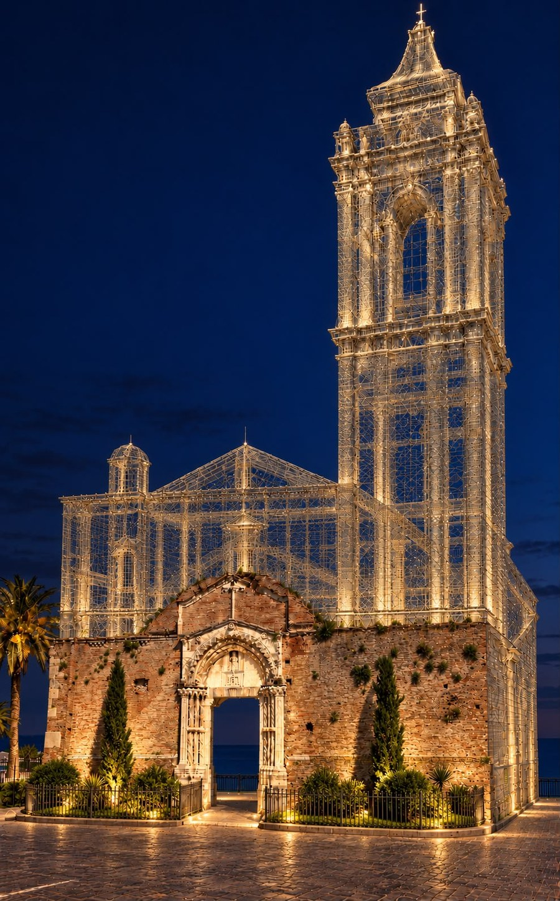

San Pietro church in Vasto, the Di Marco brothers’ exhibition and the idea of a work inspired by Tresoldi
Unofficial translation of the press release published in Italian.
In the Cloister of the Bishop’s Curia in Vasto, the Pro Loco is showing until 8 November 2026 the photographs in which Fiorentino and Edison Di Marco documented the 1956 landslide and the fate of the church of San Pietro. After visiting with president Mercurio Saraceni and the photographers’ family, Sigismondi proposes bringing the vanished church back to life with light wire-mesh structures around the surviving portal, following Edoardo Tresoldi’s basilica at Siponto.
Why it matters: Only the portal along via Adriatica remains of the church. The proposal opens a public discussion on how to pass its memory on to the new generations, respecting the fragility of the site and the view.

“The photographic exhibition ‘The Di Marco Brothers, photographers from news to history. The 1956 landslide and the church of San Pietro’, organised by the Pro Loco Città del Vasto and set up in the Cloister of the Bishop’s Curia, is a great gift to the city and to its memory. The hundreds of people from Vasto visiting it show how alive this page of the town’s history still is.
The exhibition is reaching different generations, weaving together feelings and memories. There is the emotion of those who knew the Vasto of seventy years ago, who attended the church of San Pietro and lived through its painful demolition; the wish of those who were only children at the time to find sharper images; and the curiosity of young people eager to discover what lay beyond the portal they see today along via Adriatica.
The photographs of the brothers Fiorentino and Edison Di Marco are a precious heritage. With remarkable sensitivity and photographic skill, they documented the days of the landslide and what later happened to the church, preserving the memory of rooms, paintings, architectural elements and details that would otherwise have been lost. Through their work we can rediscover a place that has deeply shaped Vasto’s identity.
In recent days I visited the exhibition, accompanied by the president of the Pro Loco, Mercurio Saraceni, and by Maurizio and Mascia Di Marco, relatives of the two photographers. The visit led me to reflect on how to give the community back, in a more tangible way, the memory of the church of San Pietro.
Of course I am not thinking of rebuilding it, which is hard to imagine given how fragile the site is; I am thinking rather of the opportunities offered by digital technologies or contemporary art, which can bring a vanished architecture back to life. An extraordinary example is the work created by the artist Edoardo Tresoldi at Siponto: a wire-mesh sculpture that recreates the forms of the ancient early Christian basilica, letting visitors perceive its spaces and its grandeur.
An idea inspired by that experience could be explored in Vasto too, with full respect for the safety of the site, the landscape and the use of the via Adriatica promenade. The ancient portal, still preserved today, could once again converse with the forms of the vanished church through light, transparent wire-mesh structures, while keeping the view of the panorama unbroken.

With these reflections I wanted to offer my contribution to a discussion that I hope will involve the whole city, encouraging design ideas able to recover and enhance the historical, social and architectural meaning of the church of San Pietro and to pass on its knowledge to the new generations.
I sincerely thank the Pro Loco, its president Saraceni and all its collaborators for promoting this exhibition and for the cultural energy with which they enrich the life of our city every year. To the Di Marco family goes my deep gratitude for having kept and shared this precious heritage. The exhibition will stay open until 8 November: I invite those who have not yet visited it to take this valuable opportunity to rediscover a fundamental part of our history.”
So says Fratelli d’Italia Senator Etelwardo Sigismondi, from Vasto.
Original title of the press release: San Pietro church in Vasto, Sigismondi (FdI): an extraordinary exhibition rekindles the city’s memory. I am thinking of a contemporary work inspired by Tresoldi’s art